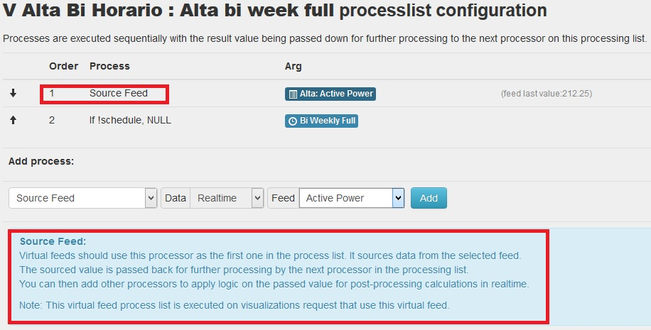
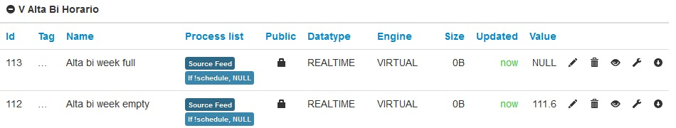
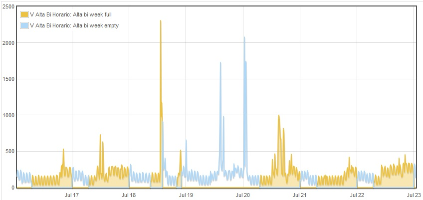

Virtual Feed is a new engine available from EmonCMS 9.0.
It acts as a regular feed but data is calculated in realtime from existing feeds data, no disc space is used.
A welcome feature of post-processing data is that we could calculate daily data on the fly. But the main difficulty with realtime is that we cannot calculate average data for all the data points with post-processing for long ranges of time quickly.
Imagine that a year may have 300Mb data, processing it fast to show when user drags a graph is not possible.
So i'v implemented a sample approach logic that will calculate average data closer to each time unit of the graph being viewed.
For example a 800 pixels wide graph viewing a full year will be displaying (365*24*60 / 800) 657 seconds for each x axis pixel. For this i calculate average value with about 10s of data from each of the pixel timestamp.
The difference in response time with sampled aprouch for a year of data is <3 seconds vs >60s for not sampled.
Re: Virtual Feed - Post-processing data on the fly
How to use Virtual feeds:
1 - To create a Virtual feed click "New Virtual Feed" on the feeds menu bottom.
2 - A popup will appear, you should specify the type of data this virtual feed will work with:
3 - Then you must configure the processlist for the virtual feed, click the wrench icon for it on the feed menu.
4 - All virtual feeds need to source data from existing feeds. That is done with a special processor: 'Source Feed' that need to be added as the first processor.
Source Feed:
Virtual feeds should use this processor as the first one in the process list. It sources data from the selected feed.
The sourced value is passed back for further processing by the next processor in the processing list.
You can then add other processors to apply logic on the passed value for post-processing calculations in realtime.
Note: This virtual feed process list is executed on visualizations request that use this virtual feed.
A simple example to get a Virtual feed that show only the power consumed on high cost schedule:

Created two virtual feeds for each of the rate schedules using the same source feed data (measured power):

And the resulting Multigraph shows the measured power for each schedule in a different color :

Re: Virtual Feed - Post-processing data on the fly
Just a note:
An experimental setting is available for configuration if using mysql or memory engine only :
$data_sampling = false;
This will scan all data points with source feed processor so average values will be correctly calculated, but it is 20x slower than sampling method.
Re: Virtual Feed - Post-processing data on the fly
The way Vitrual engine get_data method works :
When a graph uses a virtual feed that method is called with graph start, end time and interval to display.
1 - Calculates date slots for given start, end and interval. Representing about a pixel on the x axis of the graph for each time slot.
2 - If feed is realtime slots are calculated based on interval, if daily, slots date is at its datetime midnight of user timezone.
3 - Executes virtual feed processlist for each slot individually.
-> First processor of virtual feed processlist should be the source_feed_data_time() this will get data for a time slot.
4 - Agreggates all time slots and processed data.
5 - Returns data to the graph.
Re: Virtual Feed - Post-processing data on the fly
Can the virtual feed be output via MQTT?
Re: Virtual Feed - Post-processing data on the fly
Ay sheppy. you missed the concept of virtual feed with that question.
Virtual feeds are calculated on the fly when you query data (from a graph).
How would you do that publishing to mqtt?
You can however publish the feed that sources a virtual feed to mqtt, as usual from the input processlist.
Re: Virtual Feed - Post-processing data on the fly
Apologies, I did misinterpret.
What I would like is the ability to output a feed value via MQTT.
With EMONCMS Low Write 8.5 I have to use the raw MQTT input that goes into EMONHUB and add it to other feeds using OpenHAB which duplicates what EMONCMS is doing. I use it to turn appliances On and Off to avoid exporting / importing Grid Power.
Does EMONCMS 9 offer this?
Re: Virtual Feed - Post-processing data on the fly
sheppy
What hardware & operating system are you using?
Paul
Re: Virtual Feed - Post-processing data on the fly
Sorry.. in where position is configured the virtual feed ?
I tryed see the database via phpmyadmin but i dont find any reference to the virtualfeed..
I do this questions because after configuring 65 feed i have try configure 1 virtualfeed but after this operation i get error and lost all my work,.
Now i can see in input page ( in field process list ) 'wait...' and in feed list page 'loading..'
In database i can see all my feed in 'feeds' table.. also my input in 'input' table..
I would try manually delete the virtualfeed reference that has determined the problem, but do not understand where are placed this information..
My system il PI with jessie and last emoncms ( 9.1 last realase )
Ceers,
Fabrizio.
( sorry for my english.. )
Re: Virtual Feed - Post-processing data on the fly
Its in feeds table with engine = 7.
Re: Virtual Feed - Post-processing data on the fly
:) Thanks chaveiro..
I have deleted the record in feed with engine = 7 and now emoncms is OK.
.. but i see this problem again ..
I configured a new virtual feed as daily type.. but as source feed i cannot see any feed configured in daily type ( is available in list only the realtime feed ).
The source feed list are the same for both ( daily or realtime )
my needed is measure the daily COP of Heath Pomp as energyusagedaily / energy productiondaily
is possible use virtualfeed for do this relations ?
( In old Emoncms, before virtualfeed , i route back the normal feed as input for do this feature.. )
( i use the last 9.1 version in low-write mode.. )
All my daily feed are configured as mysql timeseries..
Ciao,
Fabrizio.
Re: Virtual Feed - Post-processing data on the fly
There is somethings wrong related to virtualfeed..
I get this error during visualisation of one virtualfeed :
Fatal error: Uncaught exception 'Exception' with message 'ABORTED: Call to undefined module method. Missing function on module? method=getstartday' in /var/www/emoncms/Modules/process/process_model.php:50 Stack trace: #0 /var/www/emoncms/Modules/feed/engine/VirtualFeed.php(78): Process->__call('getstartday', Array) #1 /var/www/emoncms/Modules/feed/engine/VirtualFeed.php(78): Process->getstartday(1446673411) #2 /var/www/emoncms/Modules/feed/feed_model.php(386): VirtualFeed->lastvalue(97) #3 /var/www/emoncms/Modules/feed/feed_model.php(343): Feed->get_timevalue(97) #4 /var/www/emoncms/Modules/vis/vis_controller.php(77): Feed->get(97) #5 /var/www/emoncms/core.php(64): vis_controller() #6 /var/www/emoncms/index.php(146): controller('vis') #7 {main} thrown in /var/www/emoncms/Modules/process/process_model.php on line 50
After that emoncms stop to work and need open database via phpmyadmin and delete the engine 7 record in feeds..
This is the record :
New Virtual Feed, 1, Virtual, NULL, NULL, 2, 0, NULL, 7 53:19,30:45
Re: Virtual Feed - Post-processing data on the fly
Hi, update to latest version and see if its ok now.
The error you describe may be related to creating a virtual feed that use other feeds than deleting some of that other feeds.
Re: Virtual Feed - Post-processing data on the fly
There is a new version?
I just use this .
9.1 | 2015.11.02.
Thanks,
fabrizio.
Re: Virtual Feed - Post-processing data on the fly
Hi fcattaneo
Did you every fix this as i think im having the same problem
ones i'v add the Virtual Feed and add the feeds emoncms freed stop loading see images
i get the same error in the emoncms logs
Fatal error: Uncaught exception 'Exception' with message 'ABORTED: Call to undefined module method. Missing function on module? method=getstartday' in /var/www/emoncms/Modules/process/process_model.php:50
and the only way i can get evering back up and runing is to delete the Virtual Feed with phpmyadmin
Thanks Steve
Re: Virtual Feed - Post-processing data on the fly
I gave up trying virtual feed with daily data .. I think that is sometings not right.
Also virtualfeed with realtime data have some problems .. work fine but give strange results.
for example I have a virtualfeed that calculates the difference between two feed (two temperatures) and the result is always wrong to offset .. at this time T1 = 34, T2 = 34, Virtualfeed = 0.2 instead of 0.
Ciao..
Fabrizio.
Re: Virtual Feed - Post-processing data on the fly
Thanks Fabrizio
chaveiro is this something that will be fix in the next update
Thanks Steve
Re: Virtual Feed - Post-processing data on the fly
Try 9.2 there was some minor issues that caused what you described.
Not sure about daily data though...
Re: Virtual Feed - Post-processing data on the fly
Theres 9.2 have you got a link for download
Re: Virtual Feed - Post-processing data on the fly
It OK it in the git update
Re: Virtual Feed - Post-processing data on the fly
Hi Chaveiro
Great job the Virtual Feed are now working for me :D
Thanks Steve
Re: Virtual Feed - Post-processing data on the fly
Great job !!
Now it seems that works .
thanks :) !!!
Re: Virtual Feed - Post-processing data on the fly
Hi
I'm seeing a problem with virtual feeds. I have a virtual feed which used another feed in the process list (process /feed).
/feed (divide) where the feed is virtual has to be the last processing option as it seems that anything after it fails.
I tried to multiply by (say) 2 with (calibration) x 2 after the /(virtual)feed and the multiplier was ignored.
I've got it working by using the /(virtual)feed as the last processing action but thought someone should know....
V9.2 | 2015.11.27
Thanks
Mike
Re: Virtual Feed - Post-processing data on the fly
I have the same problem in the version 9.31 and I have reported it in GitHub as issue:
https://github.com/emoncms/emoncms/issues/487
I am trying to resolve it, because it forces me to use a normal feed to do the same.
Edit - duplicate posts deleted - Moderator, BT
Please read this.